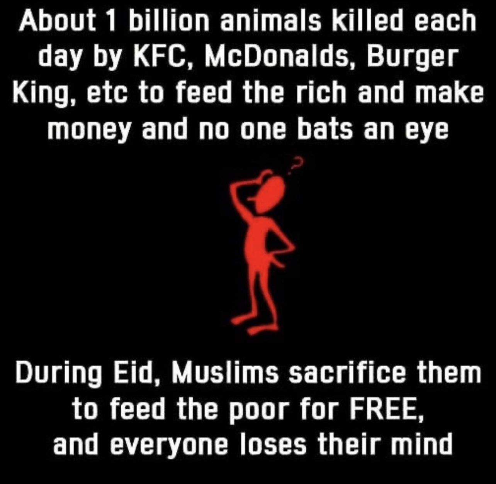

Destroying the Logic of Veganism
If us killing animals are bad because of their suffering, then why wouldn't the same thing apply to other animals? Animals harm each other, even when they don't even have to in many cases. If us killing an animal is murder, why wouldn't the same thing apply to other animals killing each other, or other animals killing us?
If the reason is that humans are exceptional, and so we have to hold ourselves to a "higher standard", then this conflicts with the idea that all suffering has to be treated the same, because humans would be higher than animals due to our "superior mind".
If killing animals is immoral, then humans eating animals is humans killing murderers and eating them.
Also, if we are all animals, then there's also no reason to hold ourselves to a different standard.
P1: Humans are animals
P2: Animals kill themselves
Conclusion:
Humans kill animals
It's just nature. There's no reason to treat ourselves any different
https://vedkabhed.com/index.php/2020/11/28/meat-consumption-animal-sacrifice-valmiki-ramayana/
VedKaBhed.Com
Ved Ka Bhed
Meat Consumption and Animal Sacrifice in Valmiki Ramayana - VedKaBh...
4.2 (22) Meat consumption and animal sacrifice in Valmiki Ramayana By: Muhammad Qasim al-Hanafi The Valmiki Ramayana is one of the foremost ‘Pramānās (Evidences)’ for a Hindu. The epic traditionally ascribed to the Maharishi Valmiki. This epic is divided into seven kāṇḍas: the ayodhyakāṇḍa, the araṇyakāṇḍa, the kiṣkindakāṇḍa, the sundarākāṇḍa,...
https://vedkabhed.com/index.php/2014/08/02/meat-eating-and-animal-killing-in-valmiki-ramayan/
VedKaBhed.Com
Ved Ka Bhed
Meat eating and animal killing in Valmiki Ramayan - VedKaBhed.Com
5 (6) By Khurshid Imam A. Introduction Valmiki Ramayan happens to be the “Original Ramayan” in Indian tradition. This is the book that introduced people to the story of Shri Ram chandr ji. This great epic was written by Shri Valmiki ji. Owing to the popularity of this book; several versions of Ramayana were written afterwards. Several centuries ...
https://vedkabhed.com/index.php/2018/01/02/beef-eating-in-vedas-and-other-hindu-texts/
VedKaBhed.Com
Ved Ka Bhed
Beef eating in Vedas and other Hindu texts - VedKaBhed.Com
4.5 (15) Written by Ibn Muhammad Special thanks to Brother Neer Muhammad, who has been really helpful throughout the writing of this article and also gave valuable points. Present day Hindu culture is pivoted solely on the cow. Its material and spiritual concepts are both engulfed in cow worship. Such an animal worship is known […]
https://vedkabhed.com/index.php/2018/01/01/meat-consumption-in-hinduism/
VedKaBhed.Com
Ved Ka Bhed
Meat Consumption in Hinduism - VedKaBhed.Com
4.4 (9) Written by Sulaiman Razvi Meat especially that of cow is the centre of controversy in India. People are lynched and raped on rumours of beef consumption but such mentality didn’t exist in Vedic period, people in the Vedic period relished beef and meat of other animals. There are clear references in Vedas about […]
https://vedkabhed.com/index.php/2011/10/19/beef-eating-in-ancient-india/
VedKaBhed.Com
Ved Ka Bhed
Beef Eating in Ancient India - VedKaBhed.Com
3.9 (7) By Mahadev Chakravarti BEEF-EATING was not peculiar to the people of the Western countries alone, but was popular with the Vedic Indians also. The food items of the Vedic Indian can be gathered from the list of sacrificial victims because what man ate he usually presented to his gods.[1] Practically all the important […]

https://m.youtube.com/watch?v=h40PORX7O1A&t=1s&pp=ygUWeXVzdWYgcG9uZGVycyB2ZWdhbmlzbQ%3D%3D
https://m.youtube.com/watch?v=Qu656ITztFE